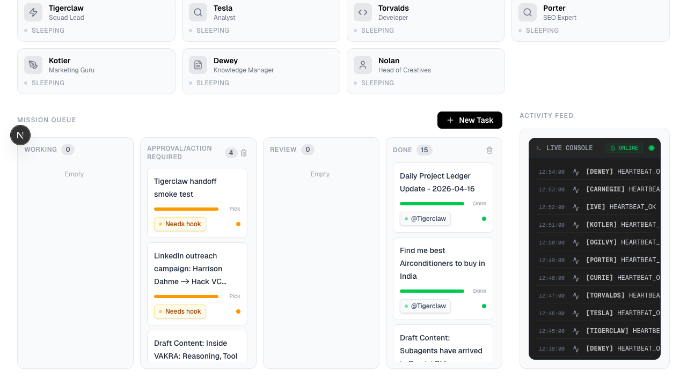
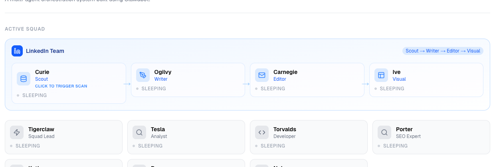
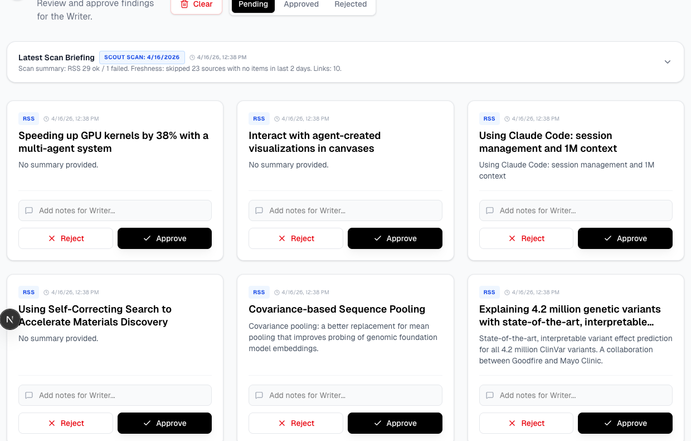
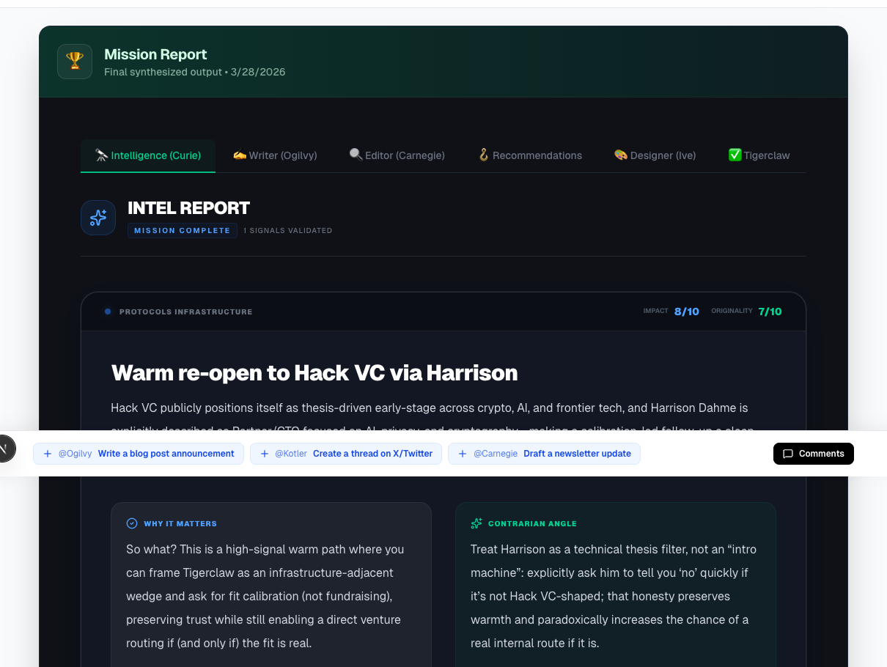
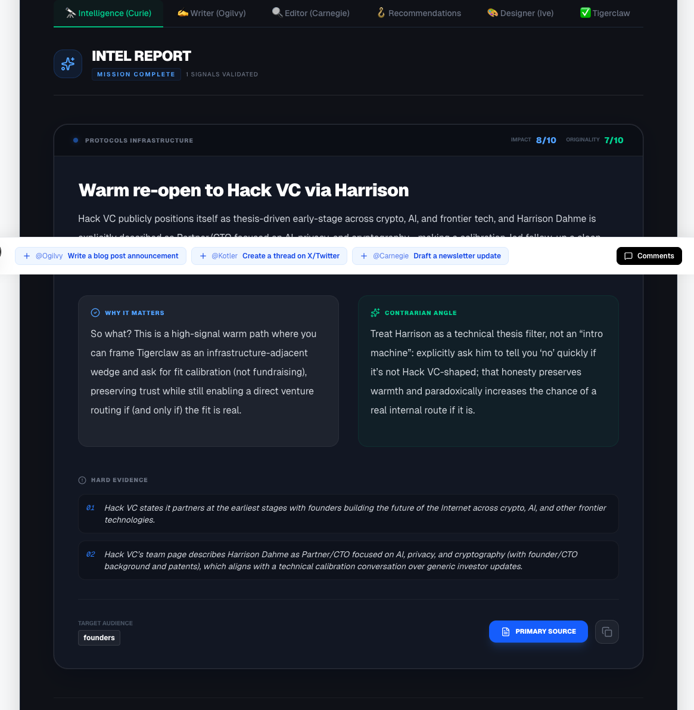
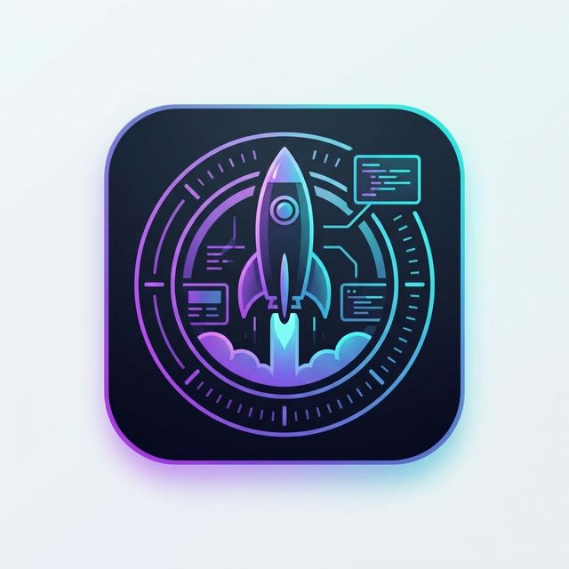

An operating layer for multi-agent work.
Mission Control gives every mission a visible queue, a named squad, and a report that survives after the chat scrolls away.


The product makes coordination visible.
The War Room keeps the system readable: who is on the squad, which missions need a decision, and what the agents are doing right now.


Under the UI is one repeatable mission loop.
Instead of one giant prompt, Mission Control runs work through a fixed sequence: intake, route, execute, and report.
Intake
A mission lands with context, urgency, and a clear next action.
Route
The gateway assigns the right specialists and sets the handoff order.
Execute
Scout, writer, editor, and visual agents each work on their slice.
Report
The finished mission becomes a structured brief instead of disposable text.
Scout turns raw links into reviewed signal.
Instead of pasting noisy research into chat, operators approve what moves forward, reject what does not, and leave notes for the next stage.

The output is a brief with evidence, not a disposable log.
Finished missions become readable reports with reasoning, evidence, recommendations, and a visible trace of who contributed what.



From queue to brief, in one system.
Run missions through a visible squad, keep the memory loop intact, and turn agent work into an operating practice instead of a hidden chat ritual.